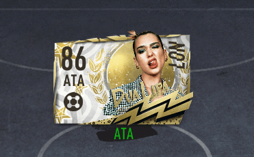
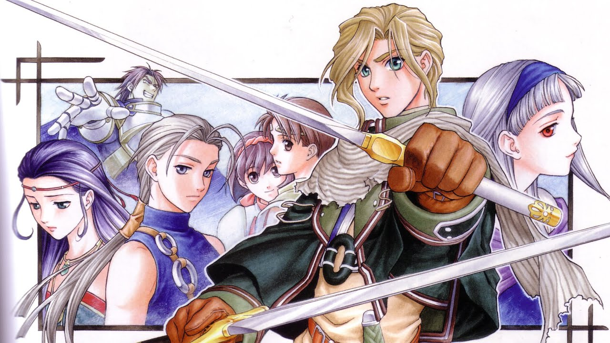
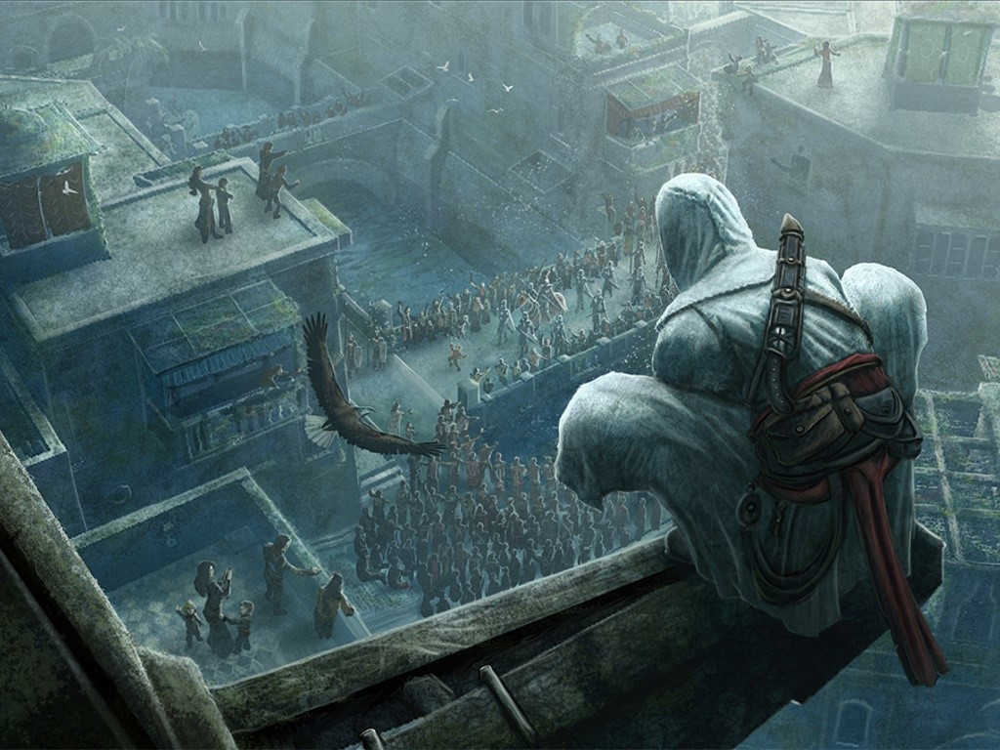

Haber hecho el salto temprano a la nueva y diminuta Xbox me está haciendo posible recorrer las calles de Night City a un paso estable y sin grandes horrores, pero que difícil es hablar de Cyberpunk 2077, hoy. El potencial y la necesidad de evolucionar que tiene es enorme, y sólo podemos imaginar lo que va a ser dentro de un año más de pulir, refinar, y por su puesto sobrevivir a este show lamentable con el que decidió presentarse al mundo.
2020 salió como salió; no tiremos juegos al fuego.
Mientras tanto, hay algo que puedo decir y que será igual de válido hoy como dentro de un año: <3
Win

Primera semana en pleno 2077, y he aquí arriba su evento más significativo, sin dudas. En cuanto a la gran victoria de The Last
of Us Part II, se siente como algo muy merecido, aunque lo cierto es que particularmente en narrativa aún me quedan varios pendientes interesantes en el radar, como 13 Sentinels y Hades. En cuanto al cyberjuego... aún es muy temprano para hablar.
Ah, pero qué joya de álbum es Future Nostalgia.
Una brisa de Harmonia

Ah, cómo desearía que Suikogaiden Vol. 1 y 2 fueran un tanto diferente a lo que son, sin dejar de agradecer todo lo que aportan al Suikomundo. Un enfoque más centrado en diálogos e intrigas políticas, y menos en combates y escenas de acción
sin acción, hubiese brillado en el formato visual novel como una Blue Gate Rune en manos de Luc.
Esa punta de iceberg que se atisba de el Holy Kingdom of Harmonia, con todas sus figuras, facciones y territorios, deja bastante a la imaginación, y lo hace con apenas unas pocas líneas de texto aquí y allá en medio de un mar de cameos
célebres y... Bright. Por suerte tuvimos más Bright.
En algún momento del año que viene, cuando la vorágine de las grandes novedades pase, espero poder pausar y adentrarme
en lo que sea que Suikoden III tiene para mostrar.
108 estrellas del destino, y con suerte, una reunión con Nash.
Pause

No sé que me ha poseído para que el fin de año me encuentre en los primerísimos peldaños de todo un replay de Los juegos de Desmond, pero por lo pronto hago responsable al programa de retrocompatibilidad de Xbox, a Jade Raymond y a todos los involucrados en ese locura de prototipo del 2007 que es Assassin's Creed. Yo sólo quería comprobar que se veía como lo recordaba, pero una vez en Masyaf no pude parar.
Haber vuelto a Damasco, Acre y Jerusalén, doce años después de los tres anillos de la muerte, fue un flash de cuidado; hoy, ya recorriendo los tejados del distrito de San Polo de Venecia, pienso que ni mis torpezas con el free roam original, ni un guión que se balancea entre lo silly y lo cuestionable, pueden estropear lo jodidamente divertido que puede ser un Assassin's de los de antes.
Cocha pacha...
Ya lastimé mi corazón crono-entusiasta, porque me olvidé de Bloodlines y salté directo al II, pero ya volveré. Revelations y el III no los tuve en su momento, así que sea lo que sea que hagan con Desmond post-Brotherhood me intriga bastante.
Cyberpunk is coming, y mientras toca detenerse y mirar atrás.